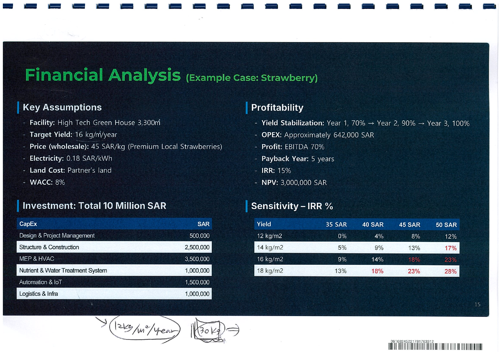
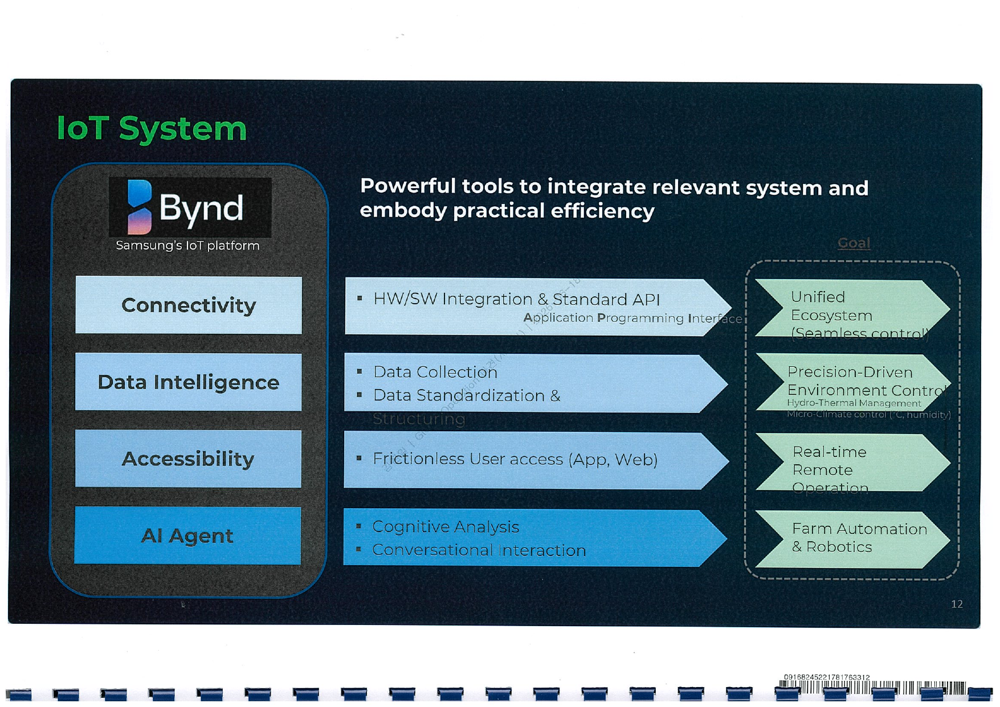

프로젝트 핵심
원본: 2026.06.28 삼성물산 리야드법인 발표자료 스캔본
사업 방향
Zero-Mile
수입 딸기 의존을 줄이고 리야드 현지에서 프리미엄 PB 딸기 생산
1단계 시설
3,300m2
IoT 기반 유리온실 테스트베드. 수직농장은 비교 검토 옵션
1단계 투자비
약 41.5억 원
10 million SAR 기준, 토지는 파트너 제공 가정
사업성 기준
IRR 15%
목표 수확량 16kg/m2/year, 도매가 45 SAR/kg 가정
자료상 사업 구조
- SPC 주주 후보: KSA Government, Samsung, Local Partner, Off-Taker
- 금융기관 후보: KSA ADF, Korea Government Fund, Private Investor
- EPC + O&M 역할: local partner main, Samsung sub 구조로 제시
- Stage 1 성공 이후 Jeddah, Dammam 및 매장 내 쇼룸형 스마트팜 확장 검토
우리 참여 여지
- CAPEX/OPEX와 수확량 시나리오 재검증
- MEP, HVAC, 수처리, 양액, 전력부하 중심 시설 검토
- 삼성 Bynd IoT 플랫폼과 MESH API 연동 설계 및 현장 데이터 표준화
- 딸기 생육 레시피, 원격 모니터링, 수확량/품질 KPI 운영안 지원
시설 CAPEX 원화 환산
적용 환율: 1 SAR = 415 KRW, 2026.07.01 조회 기준 반올림
| 구분 | SAR | KRW | 억원 환산 | 검토 포인트 |
|---|---|---|---|---|
| Design & Project Management | 500,000 | 207,500,000 | 2.08억 | 기본설계, 실시설계, 프로젝트 관리 범위 명확화 필요 |
| Structure & Construction | 2,500,000 | 1,037,500,000 | 10.38억 | 유리온실 구조, 기초, 차광, 현지 시공 단가 검증 |
| MEP & HVAC | 3,500,000 | 1,452,500,000 | 14.53억 | 리야드 고온 환경의 냉방부하, 습도제어, 전력 피크가 핵심 |
| Nutrient & Water Treatment System | 1,000,000 | 415,000,000 | 4.15억 | 원수 수질, 여과, 살균, 양액 재순환, 배액 처리 조건 확인 |
| Automation & IoT | 1,500,000 | 622,500,000 | 6.23억 | 센서, 제어기, 게이트웨이, Bynd-MESH API 연동 범위 정의 |
| Logistics & Infra | 1,000,000 | 415,000,000 | 4.15억 | 수확 후 예냉, 포장, 매장/물류센터 연계 동선 확인 |
| Total CAPEX | 10,000,000 | 4,150,000,000 | 41.50억 | Stage 1 테스트베드 기준. Stage 2 약 100M SAR는 약 415억 원 규모 |
도매가 기준
45 SAR/kg = 18,675원/kg
전기단가 기준
0.18 SAR/kWh = 약 75원/kWh
연간 OPEX 기준
642,000 SAR = 약 2.66억 원

사업성 검증에서 먼저 볼 부분
- 자료상 수확량은 16kg/m2/year이나, 손메모상 12kg 또는 30kg 재검토 흔적이 있습니다.
- 딸기 도매가 45 SAR/kg은 원화 약 18,675원/kg입니다. 오프테이크 가격 로직이 확정돼야 IRR이 안정됩니다.
- MEP & HVAC가 총 CAPEX의 35% 수준이므로 냉방부하와 전력계약 조건이 핵심 리스크입니다.
- 물 사용량, 배액 재활용률, 원수 수질, 양액비, 포장/콜드체인 비용을 별도 산정해야 합니다.
Samsung Bynd IoT + MESH API 연동 참여안
Bynd를 상위 IoT 플랫폼으로 두고, MESH는 농장 운영 데이터 계층을 보강
제안 포지션
삼성 Bynd IoT 플랫폼이 설비 통합, 데이터 수집, 사용자 접근, AI Agent를 담당하는 구조라면, MESH는 재배·시설·품질 운영 데이터를 표준 API로 정리해 Bynd와 연결하는 실무형 연동 레이어를 지원할 수 있습니다.
- 센서/제어 데이터 표준화: 온습도, CO2, EC/pH, 광량, 배지수분, 냉방/양액 장비 상태
- 재배 KPI 모델링: 구역별 생육, 착과, 수확량, Brix, 등급, 폐기율
- 원격 운영 화면: 현장 HMI, 관리자 대시보드, 알람, 작업지시
- AI 분석 준비: 생육 레시피 이력, 환경 편차, 생산성/에너지 상관 분석

01. Field Devices
센서, HVAC, 양액기, 조명, 수처리, 계측기 데이터 수집
02. MESH Gateway
프로토콜 변환, 장비 태그 정리, 장애/누락 데이터 보정
03. MESH API
REST/Webhook 기반 표준 API, 이벤트 로그, KPI 데이터 제공
04. Samsung Bynd
상위 통합, 사용자 권한, 앱/웹 접근, AI Agent 연결
05. Operation
알라시드/삼성/운영팀 대시보드, 수확·품질·에너지 의사결정
후속 제안 패키지
삼성·도화 협의용으로 바로 꺼낼 수 있는 범위
1단계: Desk Study
- 원본 발표자료 기반 CAPEX/OPEX 재산정
- 리야드 기후 기준 HVAC·전력부하 1차 검토
- 딸기 수확량 12/16/20/30kg 시나리오별 IRR 민감도
- 오프테이크 가격, 품질등급, 납품수량 조건표 작성
2단계: Technical Package
- 유리온실 vs 실내수직농장 시설 대안 비교
- 센서/제어/네트워크 아키텍처와 Bynd-MESH API 명세
- 재배 운영 KPI와 원격관리 대시보드 목업
- EPC, O&M, 데이터 운영 역할분담표
원본 파일 및 요약본
외부 공유 전 원본 PDF 공개 권한 확인 필요